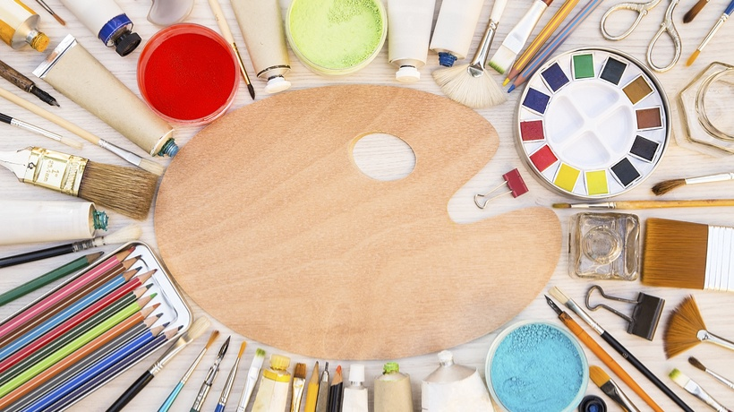

Drawing
I love to draw because I find it very relaxing and fun to do. When I was younger, I also used to take drawing classes. I can do it either really causally, such as when I just draw on my notebook and during class. I also take it very seriously and sketch in my actual drawing notebook with my better pencils and pens. Either way, it's one of my favorite things to do. Facial features are my favorite things to draw, such as eyes, lips, or a whole face.
|  |
|---|